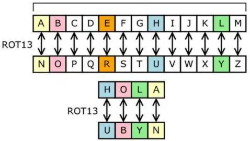

Cifrado
Es un proceso fundamental en la seguridad informática que transforma información legible (texto plano) en un formato incomprensible (texto cifrado) para protegerla de accesos no autorizados. Se utiliza en diversos ámbitos, desde la seguridad de computadoras hasta las comunicaciones militares, para garantizar la confidencialidad, integridad y autenticidad de los datos.
